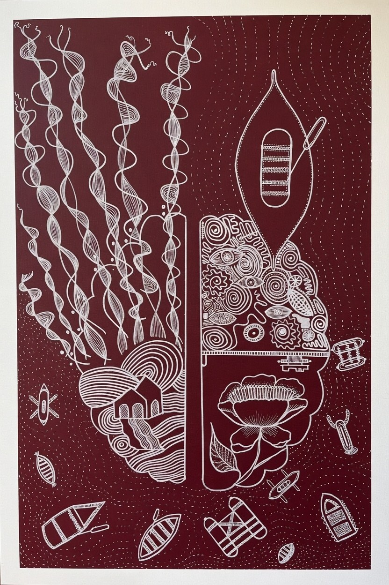
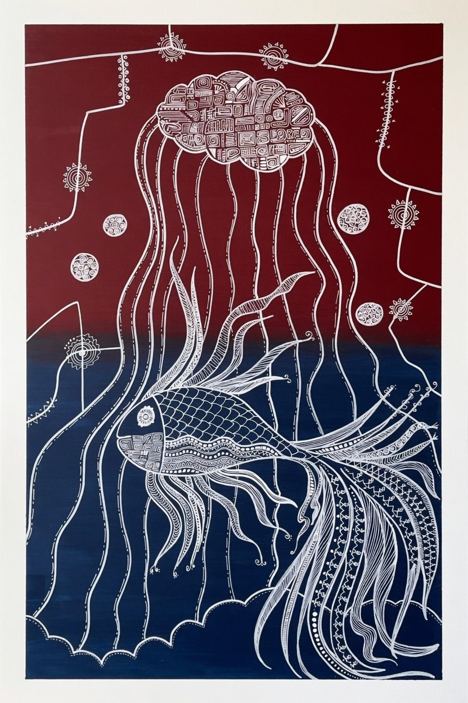
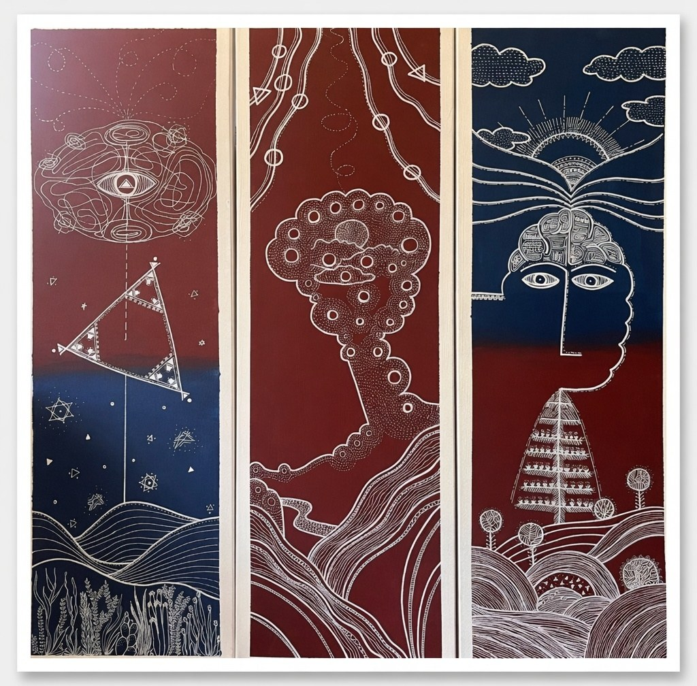
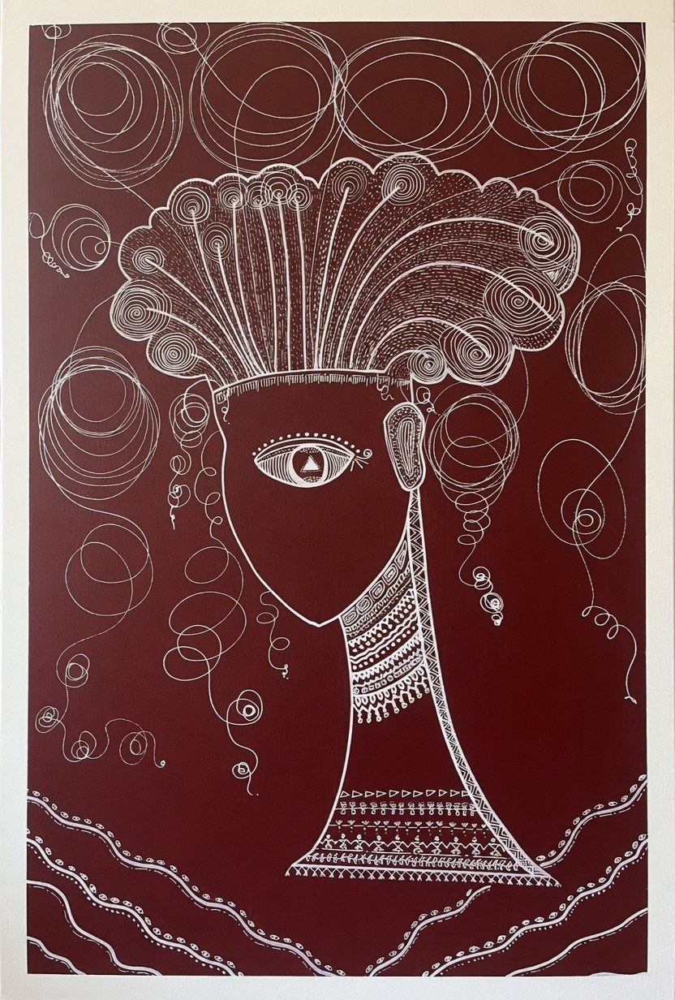

From the 2026 Portfolio • Modern Warli acrylic abstracts
ESC to close • ← → to navigate
Exploring stillness, humans, geometry & nature through technology and economics.
Inspired by traditional Indian wall painting from Maharashtra, India.
Abhilasha Gulhane is a Bay Area-based visual artist and climate & energy researcher who bridges technology with the poetic language of traditional Indian folk art. With a natural affinity for both analytical thinking and creativity—gifts inherited from her mother and grandmother—Abhilasha began painting at the age of five. Her grandmother carried forward the living tradition of painting on the walls of their home in India.
Formally trained, she earned distinction in advanced drawing from the Maharashtra State Board of Art Education, India. She began with pencils and watercolors, exploring humans and nature. In 2015, acrylic and oil painting opened new dimensions. Today she creates powerful acrylic abstracts exploring stillness, humans, geometry, and nature—deeply influenced by traditional Indian wall painting from Maharashtra.
Traditional ritual paintings in this style are created on the inside walls of village huts. The walls are made of branches, earth, and red brick, giving a red ochre background. Artists paint using only white pigment made from rice flour and water, with gum as a binder. These simple materials produce profound geometric expressions of life, community, and nature.
Abhilasha has evolved this heritage through extensive travel across twenty states in India, as well as journeys to Egypt and Albuquerque, New Mexico. She observed striking similarities in geometric patterns and humanity’s relationship with nature across cultures. Her work explores how technology and economics shape our inner and outer worlds—revealing the invisible connections that bind us all.




My art bridges technology and economics with the poetic, rhythmic geometries of traditional Indian folk painting from Maharashtra. My grandmother painted on the walls of our home using rice paste on earth and brick. That living tradition lives in my practice today. I explore stillness, humans, geometry, and nature. Through rhythmic white linework, I investigate how technology shapes our inner and outer worlds—how economic systems flow like rivers, how communities form patterns, and how ancient wisdom still speaks to modern life.
Extensive travel across India, Egypt, and Native American lands revealed to me the same geometric patterns repeating across cultures—the same circles, triangles, and spirals that speak of balance and connection. My work is an invitation to see these invisible threads that connect technology, economy, and the human spirit.